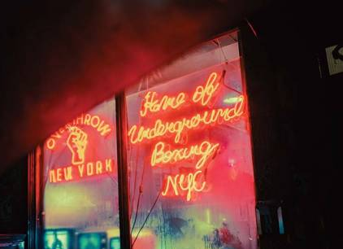

- Главная /
- Жизнь в США /
- Развлечения в Америке: места и штаты, где возможно все
Развлечения в Америке: места и штаты, где возможно все
В США не только самые высокие доходы, но еще и знают толк в развлечениях и удовольствиях. Однако все дисциплинированно: что в одном штате легально, то в другом может быть запрещено и наказуемо. Вместе с тем, все штаты объединяет одно неукоснительное правило. Развлечения доступны только законопослушным жителям США, готовым нести ответственность за результаты и последствия.
В этой статье разобрали, где и кому в Америке доступны казино, легализованная марихуана и ношение оружия.
Казино разрешены в 18 штатах — Колорадо, Индиана, Айова, Канзас, Луизиана, Мэн, Мэриленд, Массачусетс, Мичиган, Миссисипи, Невада, Нью-Джерси, Нью-Йорк, Огайо, Пенсильвания, Род-Айленд, Южная Дакота и Западная Вирджиния. Еще в шести штатах разрешены «речные» казино: Иллинойс, Индиана, Айова, Луизиана, Миссисипи и Миссури.
В этой статье разобрали, где и кому в Америке доступны казино, легализованная марихуана и ношение оружия.
Казино разрешены в 18 штатах — Колорадо, Индиана, Айова, Канзас, Луизиана, Мэн, Мэриленд, Массачусетс, Мичиган, Миссисипи, Невада, Нью-Джерси, Нью-Йорк, Огайо, Пенсильвания, Род-Айленд, Южная Дакота и Западная Вирджиния. Еще в шести штатах разрешены «речные» казино: Иллинойс, Индиана, Айова, Луизиана, Миссисипи и Миссури.

Казино, азартные игры и легкие деньги
До начала 2018 года ставки на спорт были запрещены. Федеральный закон устанавливал запрет в соответствии с Законом о защите профессионального и любительского спорта (PASPA). Только штат Невада был полностью освобожден от запрета PASPA (мог предлагать ставки на спорт внутри штата). В настоящее время 15 юрисдикций (помимо Невады) — Арканзас, Делавэр, Иллинойс, Индиана, Айова, Миссисипи, Монтана, Нью-Джерси, Нью-Мексико, Нью-Йорк, Пенсильвания, Род-Айленд, Теннесси, Западная Вирджиния и округ Колумбия —разрешили делать ставки на спорт. Из них все, кроме пяти (Арканзас, Миссисипи, Нью-Мексико, Нью-Йорк и Род-Айленд), разрешают мобильные или онлайн ставки на спорт.
Деятельность казино в США лицензирована. В каждом штате свои режимы лицензирования, но их объединяет обязательность соблюдения всех правил. Получить лицензию могут только те казино, которые прошли проверку пригодности, доказав честность и добросовестность заведения. Например, в штате Невада, известном на весь мир своими легендарными казино, лицензии на казино не выдаются, если заявители не продемонстрируют, что они обладают достаточной деловой хваткой, компетенцией и опытом, а также, что они получили адекватное и надлежащее финансирование.
А в штате Нью-Джерси, известном в мире развлечений благодаря Атлантик-Сити, ключевые сотрудники обязаны при подаче заявки на получение лицензии, пройти строгую проверку финансовой стабильности, честности и ответственности, а также продемонстрировать хороший характер, репутацию и добросовестность.
Три штата — Аризона, Монтана и Нью-Джерси — в день выборов 2020 года приняли закон, легализующий употребление марихуаны в рекреационных целях взрослыми. Штаты Нью-Йорк, Вирджиния, Нью-Мексико и Коннектикут в 2021 году увеличили общее количество штатов с легализованной марихуаной.
Деятельность казино в США лицензирована. В каждом штате свои режимы лицензирования, но их объединяет обязательность соблюдения всех правил. Получить лицензию могут только те казино, которые прошли проверку пригодности, доказав честность и добросовестность заведения. Например, в штате Невада, известном на весь мир своими легендарными казино, лицензии на казино не выдаются, если заявители не продемонстрируют, что они обладают достаточной деловой хваткой, компетенцией и опытом, а также, что они получили адекватное и надлежащее финансирование.
А в штате Нью-Джерси, известном в мире развлечений благодаря Атлантик-Сити, ключевые сотрудники обязаны при подаче заявки на получение лицензии, пройти строгую проверку финансовой стабильности, честности и ответственности, а также продемонстрировать хороший характер, репутацию и добросовестность.
Три штата — Аризона, Монтана и Нью-Джерси — в день выборов 2020 года приняли закон, легализующий употребление марихуаны в рекреационных целях взрослыми. Штаты Нью-Йорк, Вирджиния, Нью-Мексико и Коннектикут в 2021 году увеличили общее количество штатов с легализованной марихуаной.
В каких штатах легализована марихуана
Южная Дакота также прошла легализацию путем голосования в 2020 году, но в конце ноября 2021 года Верховный суд штата отменил ее, как сообщает «Associated Press». Это решение последовало за судебным иском, поддержанным республиканским губернатором Кристи Ноем.
Согласно данным Бюро переписи населения США за 2020 год, более 145 миллионов американцев в настоящее время живут в штате, где легализовали марихуану. Волна инициатив по ее легализации началась в 2012 году. Согласно опросу, проведенному исследовательским центром «Pew Research Center» в 2020 году, около двух третей взрослых американцев поддерживают легализацию марихуаны.
Вот 18 штатов, которые легализовали марихуану для рекреационного использования по состоянию на январь 2022 года: Колорадо, Вашингтон, Аляска, Орегон, Калифорния, Мэн, Массачусетс, Невада, Вермонт, Мичиган, Иллинойс, Нью-Джерси, Монтана, Аризона, Нью-Йорк, Вирджиния, Нью-Мексико, Коннектикут.
Штаты устанавливают свои собственные правила в отношении законности употребления марихуаны и ее количества. Например, в Колорадо, марихуана была легализована еще в 2012 году. Взрослые могут хранить до 1 унции (28 г) и выращивать до шести растений дома. Однако на федеральном уровне Управление по борьбе с наркотиками продолжает классифицировать марихуану как наркотик «без общепринятого в настоящее время медицинского применения и с высоким потенциалом злоупотребления».
Вторая поправка к Конституции США с каждым годом вызывает все больше и больше споров среди политиков. Вопрос контроля над оружием становится актуальнее и актуальнее с каждым массовым расстрелом в США. Сторонники ношения оружия настаивают на том, что это дает им чувство безопасности. Противники – приводят данные статистики по убийствам, которых, по их мнению, не произошло бы, если бы оружие было запрещено.
Согласно данным Бюро переписи населения США за 2020 год, более 145 миллионов американцев в настоящее время живут в штате, где легализовали марихуану. Волна инициатив по ее легализации началась в 2012 году. Согласно опросу, проведенному исследовательским центром «Pew Research Center» в 2020 году, около двух третей взрослых американцев поддерживают легализацию марихуаны.
Вот 18 штатов, которые легализовали марихуану для рекреационного использования по состоянию на январь 2022 года: Колорадо, Вашингтон, Аляска, Орегон, Калифорния, Мэн, Массачусетс, Невада, Вермонт, Мичиган, Иллинойс, Нью-Джерси, Монтана, Аризона, Нью-Йорк, Вирджиния, Нью-Мексико, Коннектикут.
Штаты устанавливают свои собственные правила в отношении законности употребления марихуаны и ее количества. Например, в Колорадо, марихуана была легализована еще в 2012 году. Взрослые могут хранить до 1 унции (28 г) и выращивать до шести растений дома. Однако на федеральном уровне Управление по борьбе с наркотиками продолжает классифицировать марихуану как наркотик «без общепринятого в настоящее время медицинского применения и с высоким потенциалом злоупотребления».
Вторая поправка к Конституции США с каждым годом вызывает все больше и больше споров среди политиков. Вопрос контроля над оружием становится актуальнее и актуальнее с каждым массовым расстрелом в США. Сторонники ношения оружия настаивают на том, что это дает им чувство безопасности. Противники – приводят данные статистики по убийствам, которых, по их мнению, не произошло бы, если бы оружие было запрещено.
Почему контроль над ношением оружия в США самый спорный вопрос в американской политике?
Хотя правила лицензирования и ношения оружия разнятся от штата к штату, есть несколько ключевых условий для получения оружия в США.
В большинстве штатов требуется разрешение на ношение пистолетов. Скрытое и открытое ношение зависит от штата. Некоторые штаты разрешают жителям носить пистолеты без разрешения. Но практически ни в одном штате не требуется разрешение на ношение винтовок и дробовиков. Массачусетс и Нью-Джерси требуют, чтобы владельцы винтовок и дробовиков имели при себе удостоверение личности (ID).